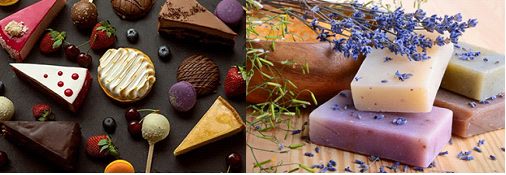
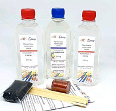

Основной способ получения – взаимодействие карбоновой кислоты и спирта (реакция этерификации), катализируемое кислотой и сопровождаемое выделением воды.
Реакция этерификации в условиях кислотного катализа обратима. Обратный процесс – расщепление сложного эфира при действии воды с образованием карбоновой кислоты и спирта – называют гидролизом сложного эфира.
RCOOR' + H2O (H+) ↔ RCOOH + R'OH
Важным методом синтеза эфиров, в основном тех, которые сложно получить прямой этерификацией, является переэтерификация, которую катализируют основаниями.
В нормальных условиях сложные эфиры обладают фруктовым или цветочным запахом. Благодаря этому, их используют в парфюмерии и пищевой промышленности.
Вообще, сложные эфиры имеют достаточно широкий спектр применения. Благодаря тому, что они смешиваются со многими органическими веществами, используются как растворители для лаков и красок.
Винилацетат используется для производства поливинилацетатных смол, клеев и красок.
Сложные эфиры на основе низших спиртов и кислот используют в пищевой промышленности при создании фруктовых эссенций, а сложные эфиры на основе ароматических спиртов – в парфюмерной (изготовление мыла, духов, кремов) промышленности.
Сложные эфиры применяются для производства пластмасс, резины в качестве пластификаторов.
Из восков изготавливают политуры, смазки, пропиточные составы для бумаги (вощеная бумага) и кожи, они входят и в состав косметических кремов и лекарственных мазей.


"Химия - интересная наука" - Место, где вы можете получить теоритическую и практичесткую информацию о замечательной науке - химии.